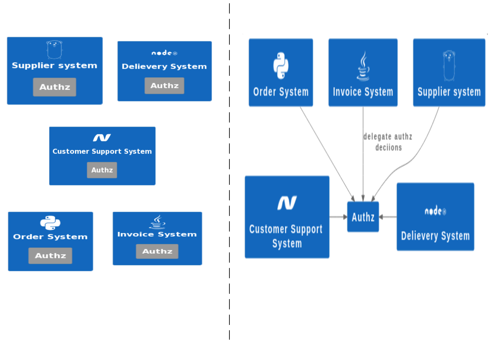
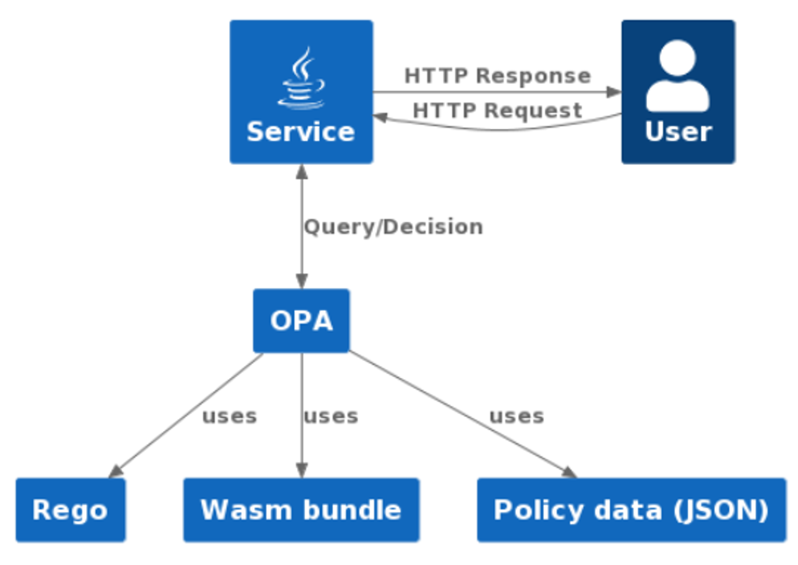
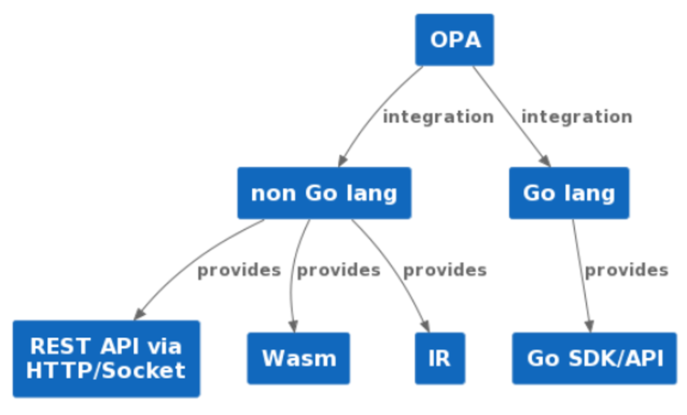
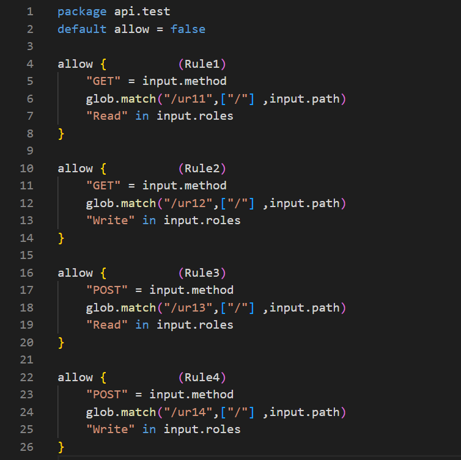
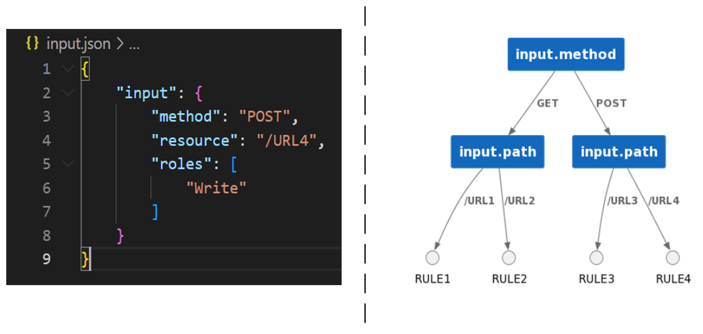
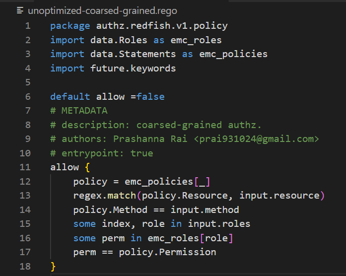
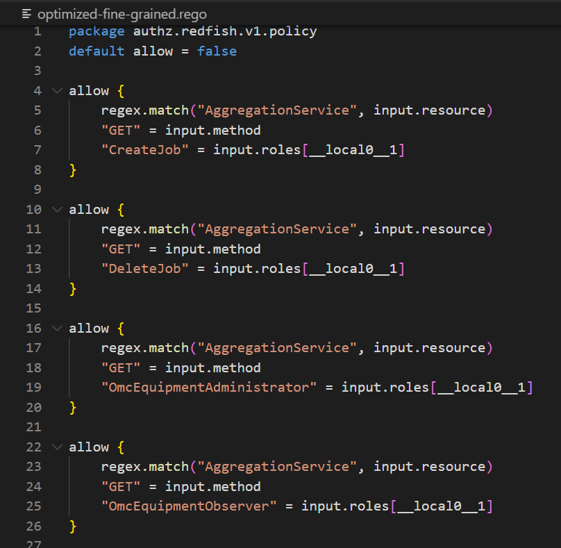
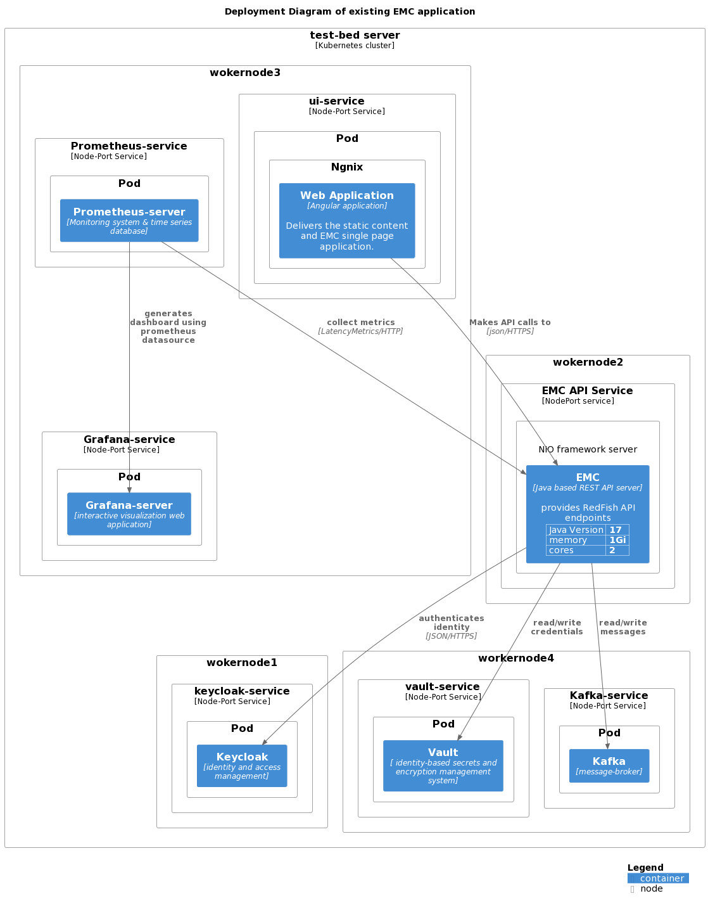
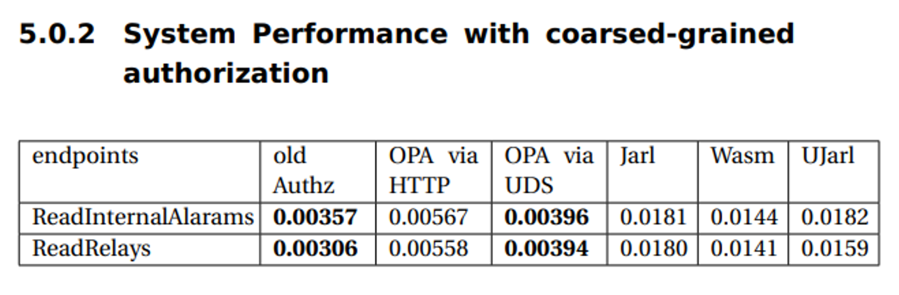
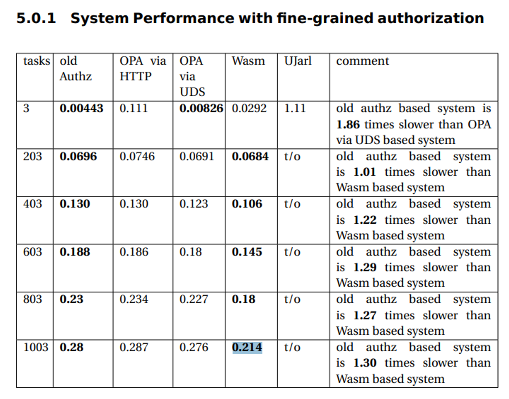

Cloud native authorization
Thesis worker PRASHANNA RAI
Supervisor VANJA DIVKOVIC
Cloud native
is an approach to develop applications using a stack of technologies which enables application autoscale, vendor-agnostics applications and Self-service deploy.
Authorization
is process of making decisions to authenticated users should be allowed to execute operations
Coarsed-grained Authorization
Fine-grained Authorization
Cloud native authorization Problem
offload the authorization logic from microservice and only enforce decision into system
Use of
Open Policy Agent (OPA)
OPA is CNCF graduated project, domain agnostic, general purpose policy engine
versatility of OPA
Rego language
- declarative language
- domain specific language
- no any library is need to use JSON/YAML file or to create REST API server
- no any library is need to decoding JWT token or making HTTP Request
- provides index supported statements for performance
Example OF REGO
rule-indexing
integration approaches of OPA
| Integration approach | Performance | Compatibility |
|---|---|---|
| Go API/SDK | fastest | Go lang |
| Wasm | faster | Wasm runtime supported languages |
| REST API via HTTP | slow | Any languages |
| REST API via Unix Domain Socket | faster than HTTP based | Any languages |
| Intermediate Representation (IR) | depends upon implementations of custom evaluator | Any languages |
investigation aspects of OPA into System
- Java based application
- contains coarsed-grained and fine-grained authorization
- contains ACL file as JSON file
- application uses Role-based access control (RBAC)
Exisiting structure of Access-control List

Exisiting Access-control List Size
- 143 rules
- 68 different permissions and 7 different roles
Solution of coarsed-grained authz with unoptimized version of rego
Solution of coarse-grained authz with optimization flag=2
problem with fine-grained authz
- it needs to filter all the datas that was collected during operations before sending response
Solution of fine-grained authz with unoptimized version of rego

Solution of fine-grained authz with optimization flag=2
implementation within Java application
- REST API via HTTP
- REST API via Unix Domain Socket
- Jarl library that uses Intermediate file
- use of library that executes Wasm binaray inside JVM
existing EMC Application
implementation details with OPA
measurements of latency with Prometheus
- latency metrics is generated on ContainerReque- stFilter(Prefilter) of Grizzly server
- latency metric is reported back to registry before exiting ContainerRequestFilter(PostFilter) of Grizzly server
- promql to get average latency
Measurements
Discussion of old implementations
- old implementations uses linear search to find the rule
- old implementations uses HashMap to lookup permission needed for endpoints
- So, the position of rule within HashMap affects on evaluation time
Discussion of rule-indexing enabled OPA-engine
- the position of rule within rego is unaffected on evaluation time
- the position of rule within rego is unaffected on evaluation time
Analysis
- Among all the approaches, Unix Domain Socket based implementation has lower overhead
- But, Unix Domain Socket based integration is 10% slower than exisiting implementation
- But, HTTP based integration is 58% slower than exisiting implementation
- Jarl based integration was 407% slower than existing implementation
- Wasm based integration was 303% times slower than existing implementation
Measurements
Measurements
Analysis
- Old implementation uses lot of iteration to filter out datas before sending response
- Wasm-time uses JIT compiler that might have use loop unrolling for large interations
Performance depends upon evaluation time + system integrations
- Developer must consider on using rule indexing
- Developer must consider approach that has least overhead